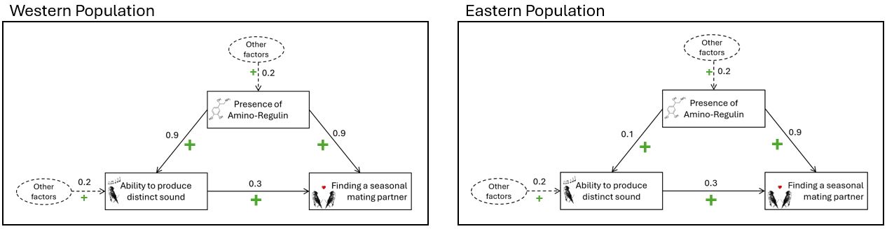
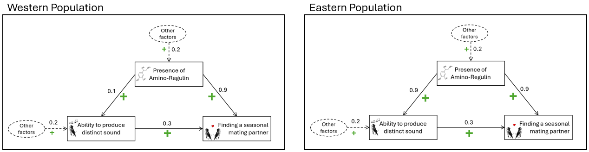
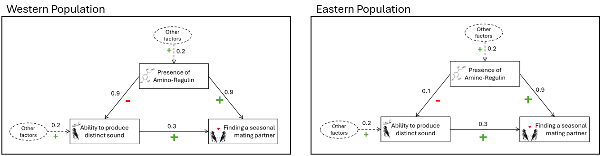
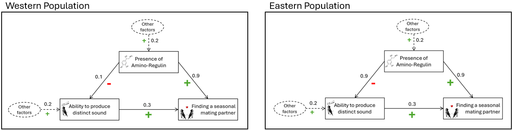
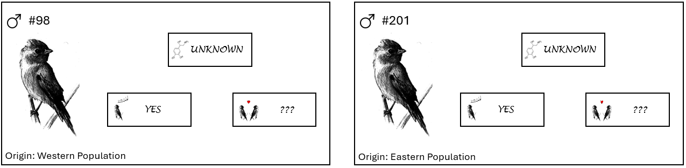

<!DOCTYPE html>
<html>
  <head>
    <title>Demo</title>
    <script src="jspsych/jspsych.js"></script>
    <script src="jspsych/plugin-html-button-response.js"></script>
    <script src="jspsych/plugin-survey-multi-choice.js"></script>
    <script src="jspsych/plugin-html-slider-response.js"></script>
	<script src="jspsych/plugin-image-keyboard-response.js"></script>
  <script src="jspsych/plugin-image-button-response.js"></script>
  <script src="jspsych/plugin-image-slider-response.js"></script>
	<script src="jspsych/plugin-html-keyboard-response.js"></script>
  <script src="jspsych/plugin-survey-likert.js"></script>
    <script src="jspsych/plugin-preload.js"></script>
    <script src="jspsych/plugin-survey-text.js"></script>
    <script src="jspsych/plugin-survey-html-form.js"></script>
    <link href="jspsych/jspsych.css" rel="stylesheet" type="text/css" />
  </head>
  <body></body>
  <script>
  


// run study with ?demo=true at the end of url to have the demo mode


var jsPsych = initJsPsych({
  experiment_width: 1200,
  on_finish: function(){
    window.location = "https://app.prolific.com/submissions/complete?cc=CULU92YV"
  }
});

// handle demo mode vs. test mode

var demo_mode = true; // in demo mode, answers to questions are not required and instruction test is always passed

function answ_req() {
   var ans_required; 
   if(demo_mode == true){
    ans_required = false; 
   }
   else{ans_required = true; 
    // Prevent participants from copy paste
      document.addEventListener('contextmenu', event => event.preventDefault()); // Disables right-click menu
      document.onselectstart = function() {
      return false;
      }; // Disables text selection

      // Disables Ctrl+C, Ctrl+V, and Ctrl+X
      document.onkeydown = function(e) {
      if (e.ctrlKey && (e.key === 'c' || e.key === 'v' || e.key === 'x')) {
        e.preventDefault();
      }
    };
   }
   return ans_required;
}

var answ_required = answ_req();

console.log("demo mode = "+demo_mode, ", answers required: "+answ_required);


var condition;
//var condition = CONDITION; 

jsPsych.data.addProperties({condition: +condition});

var subj_code;

function makeid(length) {
    var result           = '';
    var characters       = 'ABCDEFGHIJKLMNOPQRSTUVWXYZabcdefghijklmnopqrstuvwxyz0123456789';
    var charactersLength = characters.length;
    for ( var i = 0; i < length; i++ ) {
      result += characters.charAt(Math.floor(Math.random() * 
 charactersLength));
   }
   return result;
}

subj_code = makeid(12);

console.log(subj_code);

jsPsych.data.addProperties({subj_code: subj_code});


/* create timeline */
var timeline = [];

/* preload images */
var preload = {
  type: jsPsychPreload,
  images: [

    // uni logo
    "img/uni_org_color_li.png", 

     "img/scenario_illu.png",
    // causal structures
    "img/generative_09_01.png",
    "img/generative_01_09.png",

    "img/preventive_09_01.png",
    "img/preventive_01_09.png",


    // index cards

    "img/index_comparison.png"
    

  ]
}
timeline.push(preload);

var styles = `
  p {
    text-align: justify
  }
  
`
var styleSheet = document.createElement("style")
styleSheet.type = "text/css"
styleSheet.innerText = styles
document.head.appendChild(styleSheet)


//////////////////////////////////////////////////////
/* Condition selection (just for offline demo) */


var select = {
  type: jsPsychSurveyText,
  questions: [
    {
		prompt: 
		`
		<p><b>This study is in DEMO MODE.</b></p>
		
		<p>Select a condition: </p>

    <p>1-2: Generative (1 is Western 09, Eastern 01; 2 is Western 01, Eastern 09) </p>
    <p>3-4: Preventive (3 is Western 09, Eastern 01; 4 is Western 01, Eastern 09)</p>

		`, 
		placeholder: 'number between 1 and 4',
		required: answ_required,
		name: 'CondSel',
	},
  ],
	on_finish: function(data){
	condition = data.response.CondSel;
	console.log(condition);
	} 
}

var cond_selected = {
    type: jsPsychHtmlButtonResponse,
    stimulus: function () {
    return "You chose to see Condition "+condition;
		},
    choices: ['Continue']
};
timeline.push(select, cond_selected);


var EnterProlificID = {
  type: jsPsychSurveyText,
  questions: [
    {
		prompt: 
		`
		<p><b>First, please enter your Prolific-ID:</b></p>
		`, 
		placeholder: 'Prolific-ID',
		required: answ_required,
		name: 'PROLIFIC_PID',
	},
  ],
	on_finish: function(data){
	  jsPsych.data.addProperties({PROLIFIC_PID: data.response.PROLIFIC_PID});
	} 
}
//timeline.push(EnterProlificID);


////////////////////////////////////////////////////// generative

var scenario_generative_09_01 = `
                    <p style="text-align:center;"></img></p>

                    <p><i>Please read the following (fictitious) scenario thoroughly:</i></p>

                    <p>Ornithologists in New Guinea are investigating the reproductive behavior of the "Sunstreak Flutterwing," a species of bird-of-paradise. 
                    A notable observation is that only some male birds attract seasonal female mating partners, while others remain solitary during the mating season. 
                    This phenomenon has been observed in two isolated populations: the <b>Western</b> Sunstreak Flutterwing and the <b>Eastern</b> Sunstreak Flutterwing.</p>

                    <p>We will now describe the factors that influence mating success in these two populations and how they are causally related. 
                    Below, you can see two diagrams showing the relevant factors and their causal relationships.</p>
 
                    <p style="text-align:center;"></img></p>

                    <p><u>Ability to Produce a Distinct Sound</u></p>

                    <p>Some male birds can produce a distinct, high-pitched sound. The ability to produce this sound has a <b><span style="color:LimeGreen;">positive</span></b> causal influence on female birds. 
                    This is indicated by the arrow with the green <b><span style="color:LimeGreen;">"+"</span></b> that goes from <b>"Ability to produce distinct sound"</b> to <b>"Finding a seasonal mating partner"</b>. 
                    Females tend to find this sound attractive.</p>

                    <p><u>Presence of the Hormone Amino-Regulin</u></p>

                    <p>Some male birds have a hormone called Amino-Regulin in their blood. Like the distinct sound, the presence of this hormone has a <b><span style="color:LimeGreen;">positive</span></b> causal influence on female birds. 
                    This is indicated by the arrow with the green <b><span style="color:LimeGreen;">"+"</span></b> that goes from <b>"Presence of Amino-Regulin"</b> to <b>"Finding a seasonal mating partner"</b>. 
                    Female birds can smell the presence of Amino-Regulin and tend to find the scent attractive.</p>

                    <p>The presence of Amino-Regulin plays another role: besides its direct positive influence on female birds, it happens to also have a <b><span style="color:LimeGreen;">positive</span></b> causal influence on male birds' ability to produce the distinct sound. 
                      This is indicated  by the arrow with the green <b><span style="color:LimeGreen;">"+"</span></b> that goes from <b>"Presence of Amino-Regulin"</b> to <b>"Ability to produce distinct sound"</b>.
                    When Amino-Regulin binds to receptors in the vocal cord cells it enables the production of the distinct sound.</p> 
                    
                    <p>Importantly, females only mate with males who produce the distinct sound or have the hormone (or both). 
                    In other words, males who neither have the ability to produce the special sound nor the hormone will not find a mating partner.</p>

                    <p>You have now learned the general causal structure of the relevant variables in the two bird populations. On the next screen, we will explain what the numbers on the causal arrows mean.</p>
`
     

scenario_generative_2_09_01 = `
                    <p><i>Below, you will see the two causal diagrams again for your convenience. On this screen, you will learn what the numbers on the different causal arrows mean. 
                    Please study this information thoroughly.</i></p>

                    <p style="text-align:center;"></img></p>

                    <p><b><u>Numbers on the solid arrows:</u></b></p>

                    <p>The numbers on the solid arrows represent the <b>strengths</b> of the <u>individual</u> causal links. Here is what this means:</p>

                    <p><span>&#8226;</span> The value of <b>0.3</b> on the arrow from "Ability to produce the distinct sound" to "Finding a seasonal mating partner" indicates the following: 
                      the ability to produce the distinct sound alone gives a male bird a <b><span style="color:LimeGreen;">30% chance</span></b> of finding a mating partner. 
                      If that same male also happens to have Amino-Regulin in the blood, then both factors together have an even higher positive influence on his chances of finding a mating partner.</p>

                    <p><span>&#8226;</span> The value of <b>0.9</b> on the arrow from "Presence of Amino-Regulin" to "Finding a seasonal mating partner" indicates the following: 
                      the presence of Amino-Regulin alone gives a male a <b><span style="color:LimeGreen;">90% chance</span></b> of finding a mating partner.
                       If that same male also happens to be able to produce the distinct sound, then both factors together have a even higher positive influence on his chances of finding a mating partner.</p>

                    <p><u>Difference between the two Populations:</u></p>

                    <p>The only difference between the two bird populations is the strength of the link between "Presence of Amino-Regulin" and "Ability to produce distinct sound":</p>

                    <p><span>&#8226;</span> In the <b>Western</b> population, the value of <b>0.9</b> on the arrow leading from "Presence of Amino-Regulin" to "Ability to produce distinct sound" indicates the following:
                         the presence of Amino-Regulin alone gives a male a <b><span style="color:LimeGreen;">90% chance</span></b> chance of being able to produce the distinct sound. 
                         If other unspecified factors that positively influence a male's ability to produce the distinct sound happen to be also present (see information about dashed arrows below), 
                         then the presence of Amino-Regulin and these other factors together have an even higher positive influence on his chances of producing the distinct sound.</p>

                    <p><span>&#8226;</span> In the <b>Eastern</b> population, the value of <b>0.1</b> on the arrow leading from "Presence of Amino-Regulin" to "Ability to produce distinct sound" indicates the following:
                         the presence of Amino-Regulin alone gives a male a <b><span style="color:LimeGreen;">10% chance</span></b> chance of being able to produce the distinct sound. 
                         If other unspecified factors that positively influence a male's ability to produce the distinct sound happen to be also present (see information about dashed arrows below), 
                         then the presence of Amino-Regulin and these other factors together have an even higher positive influence on his chances of producing the distinct sound.</p>

                    <p><b><u>Numbers on the dashed arrows:</u></b></p>

                    <p>The dashed arrows pointing to "Ability to produce distinct sound" and "Presence of Amino-Regulin" indicate the natural frequencies with which male birds possess these features, due to other unspecified factors.</p>

                    <p><span>&#8226;</span> The <b>absence</b> of dashed arrows pointing to "Finding a seasonal mating partner" means that no other external factors influence the chance of finding a seasonal mating partner.</p>

                    <p><span>&#8226;</span> The value of <b>0.2</b> for the arrow pointing to "Presence of Amino-Regulin" means that <b>20%</b> of all male birds have Amino-Regulin in their blood, due to other unspecified factors.</p>

                    <p><span>&#8226;</span> The value of <b>0.2</b> on the arrow pointing to "Ability to produce distinct sound" indicates that <b>20%</b> of all males without Amino-Regulin are capable of producing the distinct sound, due to other unspecified factors.</p>

                    <p><i>If you have thoroughly read and understood the information presented, please click "Continue" to proceed.</i></p>
`


var scenario_generative_01_09 = `
                    <p style="text-align:center;"></img></p>

                    <p><i>Please read the following (fictitious) scenario thoroughly:</i></p>

                    <p>Ornithologists in New Guinea are investigating the reproductive behavior of the "Sunstreak Flutterwing," a species of bird-of-paradise. 
                    A notable observation is that only some male birds attract seasonal female mating partners, while others remain solitary during the mating season. 
                    This phenomenon has been observed in two isolated populations: the <b>Western</b> Sunstreak Flutterwing and the <b>Eastern</b> Sunstreak Flutterwing.</p>

                    <p>We will now describe the factors that influence mating success in these two populations and how they are causally related. 
                    Below, you can see two diagrams showing the relevant factors and their causal relationships.</p>
 
                    <p style="text-align:center;"></img></p>

                    <p><u>Ability to Produce a Distinct Sound</u></p>

                    <p>Some male birds can produce a distinct, high-pitched sound. The ability to produce this sound has a <b><span style="color:LimeGreen;">positive</span></b> causal influence on female birds. 
                    This is indicated by the arrow with the green <b><span style="color:LimeGreen;">"+"</span></b> that goes from <b>"Ability to produce distinct sound"</b> to <b>"Finding a seasonal mating partner"</b>. 
                    Females tend to find this sound attractive.</p>

                    <p><u>Presence of the Hormone Amino-Regulin</u></p>

                    <p>Some male birds have a hormone called Amino-Regulin in their blood. Like the distinct sound, the presence of this hormone has a <b><span style="color:LimeGreen;">positive</span></b> causal influence on female birds. 
                    This is indicated by the arrow with the green <b><span style="color:LimeGreen;">"+"</span></b> that goes from <b>"Presence of Amino-Regulin"</b> to <b>"Finding a seasonal mating partner"</b>. 
                    Female birds can smell the presence of Amino-Regulin and tend to find the scent attractive.</p>

                    <p>The presence of Amino-Regulin plays another role: besides its direct positive influence on female birds, it happens to also have a <b><span style="color:LimeGreen;">positive</span></b> causal influence on male birds' ability to produce the distinct sound. 
                      This is indicated  by the arrow with the green <b><span style="color:LimeGreen;">"+"</span></b> that goes from <b>"Presence of Amino-Regulin"</b> to <b>"Ability to produce distinct sound"</b>.
                    When Amino-Regulin binds to receptors in the vocal cord cells it enables the production of the distinct sound.</p> 
                    
                    <p>Importantly, females only mate with males who produce the distinct sound or have the hormone (or both). 
                    In other words, males who neither have the ability to produce the special sound nor the hormone will not find a mating partner.</p>

                    <p>You have now learned the general causal structure of the relevant variables in the two bird populations. On the next screen, we will explain what the numbers on the causal arrows mean.</p>
`
     

scenario_generative_2_01_09 = `
                    <p><i>Below, you will see the two causal diagrams again for your convenience. On this screen, you will learn what the numbers on the different causal arrows mean. 
                    Please study this information thoroughly.</i></p>

                    <p style="text-align:center;"></img></p>

                    <p><b><u>Numbers on the solid arrows:</u></b></p>

                    <p>The numbers on the solid arrows represent the <b>strengths</b> of the <u>individual</u> causal links. Here is what this means:</p>

                    <p><span>&#8226;</span> The value of <b>0.3</b> on the arrow from "Ability to produce the distinct sound" to "Finding a seasonal mating partner" indicates the following: 
                      the ability to produce the distinct sound alone gives a male bird a <b><span style="color:LimeGreen;">30% chance</span></b> of finding a mating partner. 
                      If that same male also happens to have Amino-Regulin in the blood, then both factors together have an even higher positive influence on his chances of finding a mating partner.</p>

                    <p><span>&#8226;</span> The value of <b>0.9</b> on the arrow from "Presence of Amino-Regulin" to "Finding a seasonal mating partner" indicates the following: 
                      the presence of Amino-Regulin alone gives a male a <b><span style="color:LimeGreen;">90% chance</span></b> of finding a mating partner.
                       If that same male also happens to be able to produce the distinct sound, then both factors together have a even higher positive influence on his chances of finding a mating partner.</p>

                    <p><u>Difference between the two Populations:</u></p>

                    <p>The only difference between the two bird populations is the strength of the link between "Presence of Amino-Regulin" and "Ability to produce distinct sound":</p>

                    <p><span>&#8226;</span> In the <b>Eastern</b> population, the value of <b>0.9</b> on the arrow leading from "Presence of Amino-Regulin" to "Ability to produce distinct sound" indicates the following:
                         the presence of Amino-Regulin alone gives a male a <b><span style="color:LimeGreen;">90% chance</span></b> chance of being able to produce the distinct sound. 
                         If other unspecified factors that positively influence a male's ability to produce the distinct sound happen to be also present (see information about dashed arrows below), 
                         then the presence of Amino-Regulin and these other factors together have an even higher positive influence on his chances of producing the distinct sound.</p>

                    <p><span>&#8226;</span> In the <b>Western</b> population, the value of <b>0.1</b> on the arrow leading from "Presence of Amino-Regulin" to "Ability to produce distinct sound" indicates the following:
                         the presence of Amino-Regulin alone gives a male a <b><span style="color:LimeGreen;">10% chance</span></b> chance of being able to produce the distinct sound. 
                         If other unspecified factors that positively influence a male's ability to produce the distinct sound happen to be also present (see information about dashed arrows below), 
                         then the presence of Amino-Regulin and these other factors together have an even higher positive influence on his chances of producing the distinct sound.</p>

                    <p><b><u>Numbers on the dashed arrows:</u></b></p>

                    <p>The dashed arrows pointing to "Ability to produce distinct sound" and "Presence of Amino-Regulin" indicate the natural frequencies with which male birds possess these features, due to other unspecified factors.</p>

                    <p><span>&#8226;</span> The <b>absence</b> of dashed arrows pointing to "Finding a seasonal mating partner" means that no other external factors influence the chance of finding a seasonal mating partner.</p>

                    <p><span>&#8226;</span> The value of <b>0.2</b> for the arrow pointing to "Presence of Amino-Regulin" means that <b>20%</b> of all male birds have Amino-Regulin in their blood, due to other unspecified factors.</p>

                    <p><span>&#8226;</span> The value of <b>0.2</b> on the arrow pointing to "Ability to produce distinct sound" indicates that <b>20%</b> of all males without Amino-Regulin are capable of producing the distinct sound, due to other unspecified factors.</p>

                    <p><i>If you have thoroughly read and understood the information presented, please click "Continue" to proceed.</i></p>
`


//////////////////////////////////////// preventive 


var scenario_preventive_09_01 = `
                    <p style="text-align:center;"></img></p>

                    <p><i>Please read the following (fictitious) scenario thoroughly:</i></p>

                    <p>Ornithologists in New Guinea are investigating the reproductive behavior of the "Sunstreak Flutterwing," a species of bird-of-paradise. 
                    A notable observation is that only some male birds attract seasonal female mating partners, while others remain solitary during the mating season. 
                    This phenomenon has been observed in two isolated populations: the <b>Western</b> Sunstreak Flutterwing and the <b>Eastern</b> Sunstreak Flutterwing.</p>

                    <p>We will now describe the factors that influence mating success in these two populations and how they are causally related. 
                    Below, you can see two diagrams showing the relevant factors and their causal relationships.</p>

                    <p style="text-align:center;"></img></p>

                    <p><u>Ability to Produce a Distinct Sound</u></p>

                    <p>Some male birds can produce a distinct, high-pitched sound. The ability to produce this sound has a <b><span style="color:LimeGreen;">positive</span></b> causal influence on female birds. 
                    This is indicated by the arrow with the green <b><span style="color:LimeGreen;">"+"</span></b> that goes from <b>"Ability to produce distinct sound"</b> to <b>"Finding a seasonal mating partner"</b>. 
                    Females tend to find this sound attractive.</p>

                    <p><u>Presence of the Hormone Amino-Regulin</u></p>

                    <p>Some male birds have a hormone called Amino-Regulin in their blood. Like the distinct sound, the presence of this hormone has a <b><span style="color:LimeGreen;">positive</span></b> causal influence on female birds. 
                    This is indicated by the arrow with the green <b><span style="color:LimeGreen;">"+"</span></b> that goes from <b>"Presence of Amino-Regulin"</b> to <b>"Finding a seasonal mating partner"</b>. 
                    Female birds can smell the presence of Amino-Regulin and tend to find the scent attractive.</p>

                    <p>The presence of Amino-Regulin plays another role: besides its direct positive influence on female birds, it happens to have a <b><span style="color:red;">negative</span></b> causal influence on male birds' ability to produce the distinct sound. 
                      This is indicated  by the arrow with the red <b><span style="color:red;">"-"</span></b> that goes from <b>"Presence of Amino-Regulin"</b> to <b>"Ability to produce distinct sound"</b>.
                    When Amino-Regulin binds to receptors in the vocal cord cells it prevents the production of the distinct sound.</p>

                    <p>Importantly, females only mate with males who produce the distinct sound or have the hormone (or both). 
                    In other words, males who neither have the ability to produce the special sound nor the hormone will not find a mating partner.</p>

                    <p>You have now learned the general causal structure of the relevant variables in the two bird populations. On the next screen, we will explain what the numbers on the causal arrows mean.</p>
`
     

scenario_preventive_2_09_01 = `
                    <p><i>Below, you will see the two causal diagrams again for your convenience. On this screen, you will learn what the numbers on the different causal arrows mean. 
                    Please study this information thoroughly.</i></p>

                    <p style="text-align:center;"></img></p>

                    <p><b><u>Numbers on the solid arrows:</u></b></p>

                    <p>The numbers on the solid arrows represent the <b>strengths</b> of the <u>individual</u> causal links. Here is what this means:</p>

                    <p><span>&#8226;</span> The value of <b>0.3</b> on the arrow from "Ability to produce the distinct sound" to "Finding a seasonal mating partner" indicates the following: 
                      the ability to produce the distinct sound alone gives a male bird a <b><span style="color:LimeGreen;">30% chance</span></b> of finding a mating partner. 
                      If that same male also happens to have Amino-Regulin in the blood, then both factors together have an even higher positive influence on his chances of finding a mating partner.</p>

                    <p><span>&#8226;</span> The value of <b>0.9</b> on the arrow from "Presence of Amino-Regulin" to "Finding a seasonal mating partner" indicates the following: 
                      the presence of Amino-Regulin alone gives a male a <b><span style="color:LimeGreen;">90% chance</span></b> of finding a mating partner.
                       If that same male also happens to be able to produce the distinct sound, then both factors together have a even higher positive influence on his chances of finding a mating partner.</p>

                    <p><u>Difference between the two Populations:</u></p>

                    <p>The only difference between the two bird populations is the strength of the link between "Presence of Amino-Regulin" and "Ability to produce distinct sound":</p>

                    <p><span>&#8226;</span> In the <b>Western</b> population, the value of <b>0.9</b> on the arrow leading from "Presence of Amino-Regulin" to "Ability to produce distinct sound" indicates the following: 
                      in a male that has Amino-Regulin in his blood and that otherwise could produce the distinct sound (due to other unspecified factors; see information about dashed arrows below), 
                      there is a <b><span style="color:red;">90% chance</span></b> that the presence of Amino-Regulin prevents that male from producing the distinct sound.</p>

                    <p><span>&#8226;</span> In the <b>Eastern</b> population, the value of <b>0.1</b> on the arrow leading from "Presence of Amino-Regulin" to "Ability to produce distinct sound" indicates the following: 
                      in a male that has Amino-Regulin in his blood and that otherwise could produce the distinct sound (due to other unspecified factors; see information about dashed arrows below), 
                      there is a <b><span style="color:red;">10% chance</span></b> that the presence of Amino-Regulin prevents that male from producing the distinct sound.</p>

                    <p><b><u>Numbers on the dashed arrows:</u></b></p>

                    <p>The dashed arrows pointing to "Ability to produce distinct sound" and "Presence of Amino-Regulin" indicate the natural frequencies with which male birds possess these features, due to other unspecified factors.</p>

                    <p><span>&#8226;</span> The <b>absence</b> of dashed arrows pointing to "Finding a seasonal mating partner" means that no other external factors influence the chance of finding a seasonal mating partner.</p>

                    <p><span>&#8226;</span> The value of <b>0.2</b> for the arrow pointing to "Presence of Amino-Regulin" means that <b>20%</b> of all male birds have Amino-Regulin in their blood, due to other unspecified factors.</p>

                    <p><span>&#8226;</span> The value of <b>0.2</b> on the arrow pointing to "Ability to produce distinct sound" indicates that <b>20%</b> of all males without Amino-Regulin are capable of producing the distinct sound, due to other unspecified factors.</p>

                    <p><i>If you have thoroughly read and understood the information presented, please click "Continue" to proceed.</i></p>
`


var scenario_preventive_01_09 = `
                    <p style="text-align:center;"></img></p>

                    <p><i>Please read the following (fictitious) scenario thoroughly:</i></p>

                    <p>Ornithologists in New Guinea are investigating the reproductive behavior of the "Sunstreak Flutterwing," a species of bird-of-paradise. 
                    A notable observation is that only some male birds attract seasonal female mating partners, while others remain solitary during the mating season. 
                    This phenomenon has been observed in two isolated populations: the <b>Western</b> Sunstreak Flutterwing and the <b>Eastern</b> Sunstreak Flutterwing.</p>

                    <p>We will now describe the factors that influence mating success in these two populations and how they are causally related. 
                    Below, you can see two diagrams showing the relevant factors and their causal relationships.</p>

                    <p style="text-align:center;"></img></p>

                    <p><u>Ability to Produce a Distinct Sound</u></p>

                    <p>Some male birds can produce a distinct, high-pitched sound. The ability to produce this sound has a <b><span style="color:LimeGreen;">positive</span></b> causal influence on female birds. 
                    This is indicated by the arrow with the green <b><span style="color:LimeGreen;">"+"</span></b> that goes from <b>"Ability to produce distinct sound"</b> to <b>"Finding a seasonal mating partner"</b>. 
                    Females tend to find this sound attractive.</p>

                    <p><u>Presence of the Hormone Amino-Regulin</u></p>

                    <p>Some male birds have a hormone called Amino-Regulin in their blood. Like the distinct sound, the presence of this hormone has a <b><span style="color:LimeGreen;">positive</span></b> causal influence on female birds. 
                    This is indicated by the arrow with the green <b><span style="color:LimeGreen;">"+"</span></b> that goes from <b>"Presence of Amino-Regulin"</b> to <b>"Finding a seasonal mating partner"</b>. 
                    Female birds can smell the presence of Amino-Regulin and tend to find the scent attractive.</p>

                    <p>The presence of Amino-Regulin plays another role: besides its direct positive influence on female birds, it happens to have a <b><span style="color:red;">negative</span></b> causal influence on male birds' ability to produce the distinct sound. 
                      This is indicated  by the arrow with the red <b><span style="color:red;">"-"</span></b> that goes from <b>"Presence of Amino-Regulin"</b> to <b>"Ability to produce distinct sound"</b>.
                    When Amino-Regulin binds to receptors in the vocal cord cells it prevents the production of the distinct sound.</p>

                    <p>Importantly, females only mate with males who produce the distinct sound or have the hormone (or both). 
                    In other words, males who neither have the ability to produce the special sound nor the hormone will not find a mating partner.</p>

                    <p>You have now learned the general causal structure of the relevant variables in the two bird populations. On the next screen, we will explain what the numbers on the causal arrows mean.</p>
`
     

scenario_preventive_2_01_09 = `
                    <p><i>Below, you will see the two causal diagrams again for your convenience. On this screen, you will learn what the numbers on the different causal arrows mean. 
                    Please study this information thoroughly.</i></p>

                    <p style="text-align:center;"></img></p>

                    <p><b><u>Numbers on the solid arrows:</u></b></p>

                    <p>The numbers on the solid arrows represent the <b>strengths</b> of the <u>individual</u> causal links. Here is what this means:</p>

                    <p><span>&#8226;</span> The value of <b>0.3</b> on the arrow from "Ability to produce the distinct sound" to "Finding a seasonal mating partner" indicates the following: 
                      the ability to produce the distinct sound alone gives a male bird a <b><span style="color:LimeGreen;">30% chance</span></b> of finding a mating partner. 
                      If that same male also happens to have Amino-Regulin in the blood, then both factors together have an even higher positive influence on his chances of finding a mating partner.</p>

                    <p><span>&#8226;</span> The value of <b>0.9</b> on the arrow from "Presence of Amino-Regulin" to "Finding a seasonal mating partner" indicates the following: 
                      the presence of Amino-Regulin alone gives a male a <b><span style="color:LimeGreen;">90% chance</span></b> of finding a mating partner.
                       If that same male also happens to be able to produce the distinct sound, then both factors together have a even higher positive influence on his chances of finding a mating partner.</p>

                    <p><u>Difference between the two Populations:</u></p>

                    <p>The only difference between the two bird populations is the strength of the link between "Presence of Amino-Regulin" and "Ability to produce distinct sound":</p>

                    <p><span>&#8226;</span> In the <b>Eastern</b> population, the value of <b>0.9</b> on the arrow leading from "Presence of Amino-Regulin" to "Ability to produce distinct sound" indicates the following: 
                      in a male that has Amino-Regulin in his blood and that otherwise could produce the distinct sound (due to other unspecified factors; see information about dashed arrows below), 
                      there is a <b><span style="color:red;">90% chance</span></b> that the presence of Amino-Regulin prevents that male from producing the distinct sound.</p>

                    <p><span>&#8226;</span> In the <b>Western</b> population, the value of <b>0.1</b> on the arrow leading from "Presence of Amino-Regulin" to "Ability to produce distinct sound" indicates the following: 
                      in a male that has Amino-Regulin in his blood and that otherwise could produce the distinct sound (due to other unspecified factors; see information about dashed arrows below), 
                      there is a <b><span style="color:red;">10% chance</span></b> that the presence of Amino-Regulin prevents that male from producing the distinct sound.</p>

                    <p><b><u>Numbers on the dashed arrows:</u></b></p>

                    <p>The dashed arrows pointing to "Ability to produce distinct sound" and "Presence of Amino-Regulin" indicate the natural frequencies with which male birds possess these features, due to other unspecified factors.</p>

                    <p><span>&#8226;</span> The <b>absence</b> of dashed arrows pointing to "Finding a seasonal mating partner" means that no other external factors influence the chance of finding a seasonal mating partner.</p>

                    <p><span>&#8226;</span> The value of <b>0.2</b> for the arrow pointing to "Presence of Amino-Regulin" means that <b>20%</b> of all male birds have Amino-Regulin in their blood, due to other unspecified factors.</p>

                    <p><span>&#8226;</span> The value of <b>0.2</b> on the arrow pointing to "Ability to produce distinct sound" indicates that <b>20%</b> of all males without Amino-Regulin are capable of producing the distinct sound, due to other unspecified factors.</p>

                    <p><i>If you have thoroughly read and understood the information presented, please click "Continue" to proceed.</i></p>
`


//////////////////////////////////////////////////////
/* Confirmations */


var confs = {
          type: jsPsychSurveyMultiChoice,
          questions: [
            {
              prompt: "This study works properly only on Desktop PCs and Laptops, and not on Smartphones or Tablets. Before you proceed, please confirm that you take part via Desktop PC or Laptop.", 
              name: 'DesktopConf', 
              options: ['1: I confirm', '2: I do not confirm'], 
              required: answ_required
            }, 
            {
              prompt: "For the scientific utility of the results, it is very important that you provide complete and careful responses. How seriously will you take your participation in the study?", 
              name: 'AttentConf', 
              options: ['1: I will take it seriously', '2: I will not take it seriously'], 
              required: answ_required
            }, 
          ],
          on_finish: function(data){///////////////////////////////////// Order 01 09
            if(condition == 1){ ///////////////////////////////////////////////////////////////////////////// confounder
              causation_type = "generative";
              side_order = "09_01";
              scenario_text = [scenario_generative_09_01, scenario_generative_2_09_01];
              structure_pic = "img/generative_09_01.png";
            }else if(condition == 2){
              causation_type = "generative";
              side_order = "01_09";
              scenario_text = [scenario_generative_01_09, scenario_generative_2_01_09];
              structure_pic = "img/generative_01_09.png";
            }else if(condition == 3){ ///////////////////////////////////////////////////////////////////////////// confounder
              causation_type = "preventive";
              side_order = "09_01";
              scenario_text = [scenario_preventive_09_01, scenario_preventive_2_09_01];
              structure_pic = "img/preventive_09_01.png";
            }else if(condition == 4){
              causation_type = "preventive";
              side_order = "01_09";
              scenario_text = [scenario_preventive_01_09, scenario_preventive_2_01_09];
              structure_pic = "img/preventive_01_09.png";
            };
            jsPsych.data.addProperties({desktop_conf: data.response.DesktopConf, attent_conf: data.response.AttentConf, 
                causation_type: causation_type, side_order: side_order
            });
          },
          preamble: `
                      <p></img></p>
                      <p>Dear participant, thank you very much for helping us with this study!</p>
                      <p>Please note: This study contains memory and comprehension checks with which we aim to ensure that you correctly understood the central aspects of the study.</p>
                    `
    };

//////////////////////////////////////////////////////
/* Instructions ( all conditions) */


timeline.push(confs);


// use iframes in online study to present the stimuli 

//<br>
//  <iframe src="https://simonstephan31.github.io/stimulus_repository/learning_active.html" width="1100" height="600" style="border:none;"></iframe>
//<br>


//////////////////////////////////////////////////////////
/* Ins
tructions all conditions */

var general_instr = {
    type: jsPsychHtmlButtonResponse,
    stimulus:[function(){return`
      <p>On the next screen, you will read about a fictitious scenario that we use to study our research question. 
          It is important that you understand the information and assume that everything is exactly as described (even if aspects of it may appear implausible to you).</p>

      <p><i>If you feel ready to proceed, please click the "Continue" button below.</i></p>
      ` 
    }
    ],
    choices: ['Continue']
}; 

timeline.push(general_instr);

//////////////////////////////////////////////////////////// Structure informatoin


var instr_structure = {
    type: jsPsychHtmlButtonResponse,
    stimulus:[function(){return`
      `+scenario_text[0]+`
      ` 
    }
    ],
    choices: ['Continue']
}; 

var instr_params = {
    type: jsPsychHtmlButtonResponse,
    stimulus:[function(){return`
      `+scenario_text[1]+`
      ` 
    }
    ],
    choices: ['Continue']
}; 


timeline.push(instr_structure, instr_params);


////////// Checks 


//////////////////// check 


var mem_instr = {
    type: jsPsychHtmlButtonResponse,
    stimulus:[function(){return`
      <p>Before you proceed to the main test phase, we will ask you some questions that probe your general understanding of the causal relations you learned about.</p>

      <p>Please note: You'll need to answer these questions correctly in order to proceed to the main part of the study. We will show you the instructions again if you answer any of the questions incorrectly.</p>

      <p><i>If you feel ready to proceed, please click the "Continue" button below.</i></p>
      ` 
    }
    ],
    choices: ['Continue']
}; 

timeline.push(mem_instr);

var i = 0;

var mem_check_AC = {
  type: jsPsychSurveyMultiChoice,
  name: 'mem_check_AC',
  preamble: function (){return `<p>Please consider the causal link between "<b>Presence of Amino-Regulin</b>" and "<b>Ability to produce distinct sound</b>". 
    Here are the causal diagrams again so you don't have to remember them:</p>
             <p style="text-align:center;"></img></p>`},
  questions: [
    {
      prompt: "<b>As indicated in the causal diagrams, if Amino-Regulin is present in a male bird's blood, ...</b>", 
      options: [
        `it tends to have a <b><font color='LimeGreen'>positive</font></b> influence on the ability to produce the sound.`,
        
        `it tends to have a <b><font color='red'>negative</font></b> influence on the ability to produce the sound.`,
      ],
      required: answ_required,
      name: 'AC_check'
    },
     {
      prompt: "<b>As indicated in the causal diagrams, if Amino-Regulin is present in a male bird's blood, ...</b>", 
      options: [
        `the probability that this will actually influence that male's ability to produce the distinct sound is higher in the Western than in the Eastern population.`,
        
        `the probability that this will actually influence that male's ability to produce the distinct sound is higher in the Eastern than in the Western population.`,

        `the probability that this will actually influence that male's ability to produce the distinct sound is the same in the two populations.`,
      ],
      required: answ_required,
      name: 'AC_strength_check'
    },
  ],
  on_finish: function(data){
     i ++; 
    if(
      causation_type == "generative" 
      && side_order == "01_09"
      && data.response.AC_check == `it tends to have a <b><font color='LimeGreen'>positive</font></b> influence on the ability to produce the sound.`
      && data.response.AC_strength_check == `the probability that this will actually influence that male's ability to produce the distinct sound is higher in the Eastern than in the Western population.`)
      {AC_check_correct = "correct"}
    else if(
      causation_type == "preventive" 
      && side_order == "01_09"
      && data.response.AC_check == `it tends to have a <b><font color='red'>negative</font></b> influence on the ability to produce the sound.`
      && data.response.AC_strength_check == `the probability that this will actually influence that male's ability to produce the distinct sound is higher in the Eastern than in the Western population.`)
      {AC_check_correct = "correct"}
    else if(
      causation_type == "generative" 
      && side_order == "09_01"
      && data.response.AC_check == `it tends to have a <b><font color='LimeGreen'>positive</font></b> influence on the ability to produce the sound.`
      && data.response.AC_strength_check == `the probability that this will actually influence that male's ability to produce the distinct sound is higher in the Western than in the Eastern population.`)
      {AC_check_correct = "correct"}
    else if(
      causation_type == "preventive" 
      && side_order == "09_01"
      && data.response.AC_check == `it tends to have a <b><font color='red'>negative</font></b> influence on the ability to produce the sound.`
      && data.response.AC_strength_check == `the probability that this will actually influence that male's ability to produce the distinct sound is higher in the Western than in the Eastern population.`)
      {AC_check_correct = "correct"}
    else if(
      demo_mode == true)
      {AC_check_correct = "correct"}
    else{AC_check_correct = "incorrect"};
    console.log("check: "+AC_check_correct); 

	  jsPsych.data.addProperties({AC_check: data.response.AC_check, AC_strength_check: data.response.AC_strength_check, AC_check_correct: AC_check_correct, instr_tests: i});
  },
};


var mem_check_CE = {
  type: jsPsychSurveyMultiChoice,
  name: 'mem_check_CE',
  preamble: function (){return `<p>Please consider the causal link between "<b>Ability to produce distinct sound</b>" and "<b>Finding a seasonal mating partner</b>". 
    Here are the causal diagrams again so you don't have to remember them:</p>
             <p style="text-align:center;"></img></p>`},
  questions: [
    {
      prompt: "<b>As indicated in the causal diagrams, if a male is able to produce the distinct sound, ...</b>", 
      options: [
        `it tends to have a <b><font color='LimeGreen'>positive</font></b> influence on female birds.`, 

       `it tends to have a <b><font color='red'>negative</font></b> influence on female birds.`, 
      ],
      required: answ_required,
      name: 'CE_check'
    },
    {
      prompt: "<b>As indicated in the causal diagrams, if a male is able to produce the distinct sound, ...</b>", 
      options: [
        `the probability that this will actually influence a female bird is higher in the Western than in the Eastern population.`,

        `the probability that this will actually influence a female bird is higher in the Eastern than in the Western population.`,

        `the probability that this will actually influence a female bird is the same in the two populations.`,
      ],
      required: answ_required,
      name: 'CE_strength_check'
    },
  ],
  on_finish: function(data){
    if(
      data.response.CE_check == `it tends to have a <b><font color='LimeGreen'>positive</font></b> influence on female birds.`
      && data.response.CE_strength_check == `the probability that this will actually influence a female bird is the same in the two populations.`)
      {CE_check_correct = "correct"}
    else if(
      demo_mode == true)
      {CE_check_correct = "correct"}
    else{CE_check_correct = "incorrect"};
    console.log("check: "+CE_check_correct); 

	  jsPsych.data.addProperties({CE_check: data.response.CE_check, CE_strength_check: data.response.CE_strength_check, CE_check_correct: CE_check_correct});
  },
};


var mem_check_AE = {
  type: jsPsychSurveyMultiChoice,
  name: 'mem_check_AE',
  preamble: function (){return `<p>Please consider the direct causal link between "<b>Presence of Amino-Regulin</b>" and "<b>Finding of a seasonal mating partner</b>". 
    Here are the causal diagrams again so you don't have to remember them:</p>
             <p style="text-align:center;"></img></p>`},
  questions: [
    {
      prompt: "<b>As indicated in the causal diagrams, if Amino-Regulin is present in a male bird's blood, ...</b>", 
      options: [
        `it tends to have a <b><font color='LimeGreen'>positive</font></b> direct influence on female birds.`,

        `it tends to have a <b><font color='red'>negative</font></b> direct influence on female birds.`,  
      ],
      required: answ_required,
      name: 'AE_check'
    },
    {
      prompt: "<b>As indicated in the causal diagrams, if Amino-Regulin is present in a male bird's blood, ...</b>", 
      options: [
         `the probability that this will actually influence a female bird is higher in the Western than in the Eastern population.`,

          `the probability that this will actually influence a female bird is higher in the Eastern than in the Western population.`,

          `the probability that this will actually influence a female bird is the same in the two populations.`, 
      ],
      required: answ_required,
      name: 'AE_strength_check'
    },
  ],
  on_finish: function(data){
    if(
      data.response.AE_check == `it tends to have a <b><font color='LimeGreen'>positive</font></b> direct influence on female birds.` 
    && data.response.AE_strength_check == `the probability that this will actually influence a female bird is the same in the two populations.`)
      {AE_check_correct = "correct"}
    else if(
      demo_mode == true)
      {AE_check_correct = "correct"}
    else{AE_check_correct = "incorrect"};
    console.log("check: "+AE_check_correct); 

	  jsPsych.data.addProperties({AE_check: data.response.AE_check, AE_strength_check: data.response.AE_strength_check, AE_check_correct: AE_check_correct});
  },
};


// Create an array with your timeline variables
var mem_check_trials = [
  mem_check_AC,
  mem_check_AE,
  mem_check_CE
];

// Randomize the order of the trials
var randomized_mem_check_trials = jsPsych.randomization.shuffle(mem_check_trials);

// Push the randomized array to your main timeline
timeline.push(randomized_mem_check_trials[0], randomized_mem_check_trials[1], randomized_mem_check_trials[2]);


var instr_check_failed = {
  type: jsPsychHtmlButtonResponse,
  stimulus: 
    `
    <p>Unfortunately, you didn't answer all comprehension test questions correctly. We will therefore show you the instructions again. 
      You will then have another chance to answer the instruction test questions.</p>
    
    <p>Please click the button below to reread the instructions and repeat the test.</p>
    `
    ,
    choices: ['Back to instructions']
}

var mem_instr_re = {
    type: jsPsychHtmlButtonResponse,
    stimulus:[function(){return`
      <p>Thanks for rereading the instructions. We will now ask you the comprehension test questions again.</p>

      <p><i>If you feel ready to proceed, please click the "Continue" button below.</i></p>
      ` 
    }
    ],
    choices: ['Continue']
}; 

var loop = {
    timeline: [instr_check_failed, instr_structure, instr_params, mem_instr_re, randomized_mem_check_trials[0], randomized_mem_check_trials[1], randomized_mem_check_trials[2]], 
    loop_function: function(data){
        if(AC_check_correct == "correct" & AE_check_correct == "correct" & CE_check_correct == "correct"){
            return false; 
        } else {
            return true; 
        }
    }
}

var if_node = {
    timeline: [loop], 
    conditional_function: function(){
        if(AC_check_correct == "correct" & AE_check_correct == "correct" & CE_check_correct == "correct"){
            return false;
        } else {
           return true;
        }
    }
} // note: the if_node evaluates the value of the instruction test variable and, given that it has value "incorrect", triggers the loop node

timeline.push(if_node); 


//////////////////////////// TEST PHASE 
var test_instr = {
    type: jsPsychHtmlButtonResponse,
    stimulus:[function(){return`
      <p>You answered all comprehension test questions correctly. You'll now proceed to the test. On the next screen, we'll show you two male birds that were randomly sampled from the scientists' data bank.
        We will ask you to study the information about them and to predict how likely each of them is to find a seasonal mating partner.</p>

      <p><i>If you feel ready to proceed, please click the "Continue" button below.</i></p>
      ` 
    }
    ],
    choices: ['Continue']
}; 

//timeline.push(test_instr);


///////////////////////////////////////////////////// Test Cases 


var test_trial = {
  type: jsPsychSurveyHtmlForm,
  preamble: function(){return`
            <p><i>Below you see the two causal structures again, so you don't have to remember them.</i></p>

            <p style="text-align:center;"></img></p>

            <hr>

            <p>Now consider the two male birds shown below. The available information about them comes from the scientists' data bank and is written on two index cards.</p>

            <p style="text-align:center;"></img></p>

            <p>As you can see from the two index cards, one bird comes from the Western population and the other one from the Eastern population.
              As you can also see, both male birds have a "YES" entry for "Ability to produce the distinct sound", which means that both can produce the distinct sound.
              Whether they also have Amino-Regulin in their blood is unknown, however, because the scientists have not yet had the opportunity to take blood samples from these two birds.</p>

            <p>For each bird, the scientists would like to know the probability that it will find a seasonal mating partner, given the information they have about it and given what they know about the two populations.</p>

            <hr>
            
            <p><i>If you've studied the presented information, please answer the two questions below.</i></p>

        `},
  html: `
    <style>
      /* Base style for the slider track */
      input[type="range"] {
        -webkit-appearance: none; /* Required for custom styling */
        width: 100%;
        height: 8px; /* Or whatever height you prefer for the track */
        background: #d3d3d3; /* Default background for the empty track */
        outline: none;
        opacity: 0.7; /* Make the initial track a bit faded */
        transition: opacity .2s;
        border-radius: 5px; /* Rounded corners for the track */
      }

      /* Style for the thumb (knob) */
      input[type="range"]::-webkit-slider-thumb {
        -webkit-appearance: none;
        width: 20px; /* Size of the knob */
        height: 20px;
        border-radius: 50%; /* Make it round */
        background: #00008B; /* Dark Blue Knob Color */
        cursor: pointer;
        opacity: 0; /* Make the knob transparent initially */
        transition: opacity 0.2s ease-in-out; /* Smooth transition when it appears */
        margin-top: -6px; /* Adjust vertical position of the knob relative to the track */
      }
      input[type="range"]::-moz-range-thumb {
        width: 20px;
        height: 20px;
        border-radius: 50%;
        background: #00008B; /* Dark Blue Knob Color */
        cursor: pointer;
        opacity: 0;
        transition: opacity 0.2s ease-in-out;
      }
      input[type="range"]::-ms-thumb {
        width: 20px;
        height: 20px;
        border-radius: 50%;
        background: #00008B; /* Dark Blue Knob Color */
        cursor: pointer;
        opacity: 0;
        transition: opacity 0.2s ease-in-out;
      }

      /* Styles to hide the filled track portion initially */
      input[type="range"]::-webkit-slider-runnable-track {
        background: transparent; /* Make the filled part transparent initially */
        transition: background 0.2s ease-in-out;
      }
      input[type="range"]::-moz-range-track {
        background: transparent;
        transition: background 0.2s ease-in-out;
      }
      input[type="range"]::-ms-fill-lower { /* For IE/Edge older versions */
        background: transparent;
        transition: background 0.2s ease-in-out;
      }
      input[type="range"]::-ms-fill-upper { /* Make upper part transparent too */
        background: transparent;
        transition: background 0.2s ease-in-out;
      }

      /* Styles to show the thumb and filled track when the 'touched' class is added */
      input[type="range"].touched::-webkit-slider-thumb {
        opacity: 1; /* Make the knob visible */
      }
      input[type="range"].touched::-webkit-slider-runnable-track {
        background: #2196F3; /* This is the blue fill for the track */
      }

      input[type="range"].touched::-moz-range-thumb {
        opacity: 1;
      }
      input[type="range"].touched::-moz-range-track {
        background: #2196F3; /* This is the blue fill for the track */
      }

      input[type="range"].touched::-ms-thumb {
        opacity: 1;
      }
      input[type="range"].touched::-ms-fill-lower {
        background: #2196F3; /* This is the blue fill for the track */
      }
      input[type="range"].touched::-ms-fill-upper {
        background: transparent; /* Keep upper part transparent or change as needed */
      }

      /* Style for the value display span - reverted to previous settings */
      .slider-value-display {
        font-weight: bold;
        margin-top: 5px; /* Space between slider and value */
        display: block; /* Ensures it takes full width and new line */
        text-align: center;
        visibility: hidden; /* Hidden initially */
        opacity: 0; /* For smooth fade-in */
        transition: opacity 0.2s ease-in-out, visibility 0.2s ease-in-out;
      }
      /* When 'touched' class is applied to the slider, make its associated value display visible */
      .slider-value-display.visible {
        visibility: visible;
        opacity: 1;
      }

    </style>

    <div style="margin-bottom: 30px;">
      <p><b>First, consider the left male bird from the Western population. Based on what you have learned, what's the probability that this male bird will find a seasonal mating partner?</b>
        <i>Please use the scale below to provide an estimate. You first have to click on the scale to select a value. A knob will then appear, which you can drag to the precise value you'd like to select.</i></p>
      <input type="range" id="slider1" name="response_q1" min="0" max="100" value="50" step="1" style="width: 100%;" data-interacted="false">
      <div style="display: flex; justify-content: space-between;">
        <span>0%</span>
        <span>100%</span>
      </div>
      <span id="slider1-value" class="slider-value-display"></span>
    </div>

    <div style="margin-bottom: 30px;">
      <p><b>Now consider the right male bird from the Eastern population. Based on what you have learned, what's the probability that this male bird will find a seasonal mating partner?</b>
        <i>Please use the scale below to provide an estimate. You first have to click on the scale to select a value. A knob will then appear, which you can drag to the precise value you'd like to select.</i></p>
      <input type="range" id="slider2" name="response_q2" min="0" max="100" value="50" step="1" style="width: 100%;" data-interacted="false">
      <div style="display: flex; justify-content: space-between;">
        <span>0%</span>
        <span>100%</span>
      </div>
      <span id="slider2-value" class="slider-value-display"></span>
    </div>
  `,
  on_load: function() {
    // Access the demo_mode variable.
    // If 'demo_mode' is a global variable, you can use it directly.
    // If 'demo_mode' is passed via trial properties (e.g., in a timeline variable),
    // you would access it like: const current_demo_mode = jsPsych.timeline.currentTrial().demo_mode;
    // For this example, I'll assume it's a global variable or directly accessible.
    const current_demo_mode = (typeof demo_mode !== 'undefined' && demo_mode === true);


    const slider1 = document.getElementById('slider1');
    const slider2 = document.getElementById('slider2');
    const slider1ValueDisplay = document.getElementById('slider1-value');
    const slider2ValueDisplay = document.getElementById('slider2-value');

    const continueButton = document.querySelector('#jspsych-survey-html-form-next');

    // Function to update the displayed value
    const updateSliderValue = (slider, valueDisplayElement) => {
      valueDisplayElement.textContent = "selected value: " + slider.value + '%';
    };

    // Function to check if both sliders have been interacted with and enable/disable button
    const checkCompletion = () => {
      if (continueButton) {
        if (current_demo_mode) {
          continueButton.disabled = false; // Always enabled in demo mode
        } else {
          const slider1Interacted = slider1.dataset.interacted === 'true';
          const slider2Interacted = slider2.dataset.interacted === 'true';
          continueButton.disabled = !(slider1Interacted && slider2Interacted); // Enabled only if both interacted in non-demo mode
        }
      }
    };

    // Function to initialize and show slider parts and set 'data-interacted'
    const showSliderPartsAndSetInteracted = (event) => {
      const targetSlider = event.target;
      targetSlider.classList.add('touched');

      // Set the interacted flag to true (only relevant in non-demo mode)
      targetSlider.dataset.interacted = 'true';

      const valueDisplayId = targetSlider.id + '-value';
      const valueDisplayElement = document.getElementById(valueDisplayId);

      if (valueDisplayElement) {
        valueDisplayElement.classList.add('visible');
      }

      updateSliderValue(targetSlider, valueDisplayElement);

      checkCompletion(); // Check completion status

      // Remove the specific initial listeners after first interaction (only relevant in non-demo mode)
      if (!current_demo_mode) {
        targetSlider.removeEventListener('mouseup', showSliderPartsAndSetInteracted);
        targetSlider.removeEventListener('touchend', showSliderPartsAndSetInteracted);
      }
    };

    // Initial setup: Attach event listeners only if not in demo mode
    if (!current_demo_mode) {
      slider1.addEventListener('mouseup', showSliderPartsAndSetInteracted);
      slider1.addEventListener('touchend', showSliderPartsAndSetInteracted);
      slider2.addEventListener('mouseup', showSliderPartsAndSetInteracted);
      slider2.addEventListener('touchend', showSliderPartsAndSetInteracted);
    }


    // Attach 'input' event listeners to dynamically update the value as the slider is dragged
    // Also, ensure 'data-interacted' is set and completion checked if the user drags without a prior click
    slider1.addEventListener('input', () => {
      updateSliderValue(slider1, slider1ValueDisplay);
      if (!current_demo_mode) { // Only set interacted if not in demo mode
        slider1.dataset.interacted = 'true';
      }
      checkCompletion();
    });
    slider2.addEventListener('input', () => {
      updateSliderValue(slider2, slider2ValueDisplay);
      if (!current_demo_mode) { // Only set interacted if not in demo mode
        slider2.dataset.interacted = 'true';
      }
      checkCompletion();
    });

    // Initialize values (they will be hidden initially)
    updateSliderValue(slider1, slider1ValueDisplay);
    updateSliderValue(slider2, slider2ValueDisplay);

    // Perform an initial completion check
    checkCompletion();
  },
  on_finish: function(data) {
    const response_q1 = data.response.response_q1;
    const response_q2 = data.response.response_q2;

    console.log("Response to Question 1:", response_q1);
    console.log("Response to Question 2:", response_q2);

    data.q1_rating = response_q1;
    data.q2_rating = response_q2;

      if(side_order == "09_01"){
    jsPsych.data.addProperties({case_09: data.response.response_q1, case_01: data.response.response_q2});
    }else{
      jsPsych.data.addProperties({case_09: data.response.response_q2, case_01: data.response.response_q1});
    };

  }
};

timeline.push(test_instr, test_trial)


/////////////////// Reason 

var reason = {
  type: jsPsychSurveyText,
  name: 'Subj_explanation',
  questions: [
    {prompt: `<p>Thank you for your two ratings. On this screen, we'd like to ask you to explain your reasoning for the ratings you provided. Please use the text box below to provide your explanation.</p>`, 
    rows: 10, 
    columns: 100, 
    required: false,
    name: 'Subj_explanation'
    },
  ],
  on_finish: function(data){
	  jsPsych.data.addProperties({subj_explanation: data.response.Subj_explanation});
	  console.log(data.response.Subj_explanation)
  },
}
//timeline.push(reason);


/////////////////////////////////////// demographics


var demogr_age = {
  type: jsPsychSurveyText,
  name: 'Age_query',
  questions: [
    {prompt: `<p><b>You've finished the main part of the study</b>. We have some final demographic questions. <br> Please enter your age in the text field below.</p>`, 
    placeholder: 'Age as a number', 
    required: answ_required,
    name: 'Age'
    },
  ],
  on_finish: function(data){
	  jsPsych.data.addProperties({age: data.response.Age});
  },
}


var demogr_gender = {
  type: jsPsychSurveyMultiChoice,
  name: 'gender_query',
  questions: [
    {
      prompt: "Please indicate the gender you identify with.", 
      options: ['1: male', '2: female', '3: non-binary', '4: prefer not to say'],
      required: answ_required,
      name: 'Gender'
    },
  ],
  on_finish: function(data){
	  jsPsych.data.addProperties({gender: data.response.Gender});
  },
};
timeline.push(demogr_age, demogr_gender);


/////////////////////////////////////// technical issues
var tech_issues = {
  type: jsPsychSurveyText,
  name: 'Tech_issue_query',
  questions: [
    {prompt: `<p>Use the text field below to report any errors encountered during the study (e.g., technical issues, layout problems, spelling mistakes, or errors in program logic and flow). 
              If no issues were encountered, simply click 'Continue'</p>`, 
    rows: 10, 
    columns: 100, 
    required: false,
    name: 'Tech_issue_report'
    },
  ],
  on_finish: function(data){
	  jsPsych.data.addProperties({tech_issues: data.response.Tech_issue_report});
	  console.log(data.response.Tech_issue_report)
  },
}
timeline.push(tech_issues);

///////////////////////////////////// debriefing

var debriefing = {
  type: jsPsychHtmlButtonResponse,
  stimulus: 
    `
    </img>
    <p><b>Thank you for taking part in this study!</b></p>
  
    <p>The aim of this experiment is to find out more about how people reason about causality. 
    If you are interested in further details or if you have any questions or comments concerning the experiment, 
    feel free to contact me (Simon Stephan) under <i>sstepha1@uni-goettingen.de</i>
    To ensure you receive your reward, click the button below to return to the Prolific website.</p>
    `
    ,
    choices: ['Finish study']
};
timeline.push(debriefing);


/////////////////////////////////////////////////////////////////
/* start the experiment */
    jsPsych.run(timeline);
    //jsPsych.simulate(timeline);

</script>
</html> 